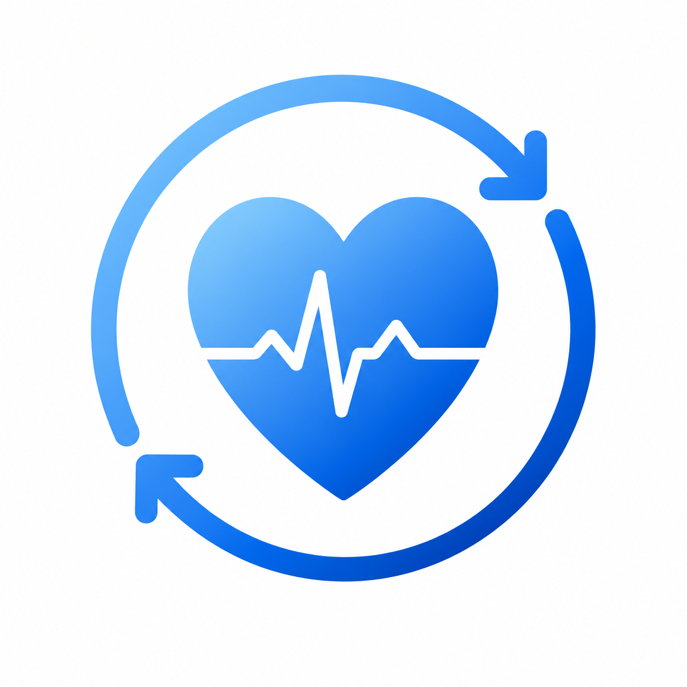

Última actualización: Septiembre 2026
Última actualización: 10 de septiembre de 2026
Al utilizar CardioSync, usted reconoce haber leído esta Política de Privacidad y comprende las prácticas de tratamiento de información aquí descritas.
CardioSync, desarrollada por lucas0706a (Resistencia, Chaco, Argentina), está comprometida con la protección de la privacidad de sus usuarios y con la aplicación de medidas razonables para resguardar la información gestionada por la aplicación.
Esta política explica cómo se procesan los datos relacionados con la salud y el bienestar dentro de CardioSync.
CardioSync funciona con una arquitectura de almacenamiento principalmente local.
Los registros de presión arterial, frecuencia cardíaca, peso corporal y demás información ingresada o sincronizada se almacenan en el dispositivo del usuario.
La aplicación no cuenta con servidores propios destinados al almacenamiento de datos personales ni transmite de forma rutinaria la información de salud del usuario a bases de datos administradas por el desarrollador.
El desarrollador no tiene acceso directo a los registros personales almacenados por los usuarios dentro de la aplicación.
CardioSync puede acceder a datos de Health Connect únicamente cuando el usuario concede permisos explícitos.
Dependiendo de los permisos otorgados, la aplicación puede leer información relacionada con sueño, actividad física, peso corporal y frecuencia cardíaca.
Los datos obtenidos se utilizan exclusivamente para proporcionar funciones de visualización, análisis y seguimiento dentro de la aplicación.
CardioSync no utilizará, transferirá ni venderá datos obtenidos mediante Health Connect para publicidad, marketing, perfilado comercial, personalización de anuncios, corredores de datos (data brokers) ni actividades incompatibles con las políticas de Health Connect.
CardioSync solicita únicamente los permisos necesarios para las funciones utilizadas por el usuario.
Dependiendo de la configuración elegida, la aplicación puede solicitar acceso a:
Los permisos pueden ser revocados en cualquier momento desde Android, Health Connect o la configuración correspondiente de la cuenta de Google.
CardioSync utiliza la API de Google Drive exclusivamente para permitir al usuario crear y restaurar copias de seguridad de sus propios datos.
La aplicación no utiliza Google Drive para publicidad, seguimiento de comportamiento, elaboración de perfiles comerciales ni comercialización de datos.
El uso y la transferencia por parte de CardioSync de información recibida desde las API de Google cumplirán con la Google API Services User Data Policy, incluidos los requisitos de Limited Use.
CardioSync no vende, alquila ni comercializa información personal o datos de salud.
La aplicación no comparte información médica con terceros.
La única excepción ocurre cuando el propio usuario decide exportar información, compartir reportes, generar archivos PDF o crear copias de seguridad en servicios externos bajo su control.
Los datos se almacenan dentro del entorno de seguridad proporcionado por Android para cada aplicación.
CardioSync implementa medidas razonables destinadas a proteger la integridad de la información almacenada.
Sin embargo, ningún sistema informático puede garantizar seguridad absoluta frente a incidentes, vulnerabilidades o accesos no autorizados.
La protección efectiva de los datos también depende de las medidas de seguridad implementadas por el usuario en su dispositivo.
Dado que el desarrollador no conserva copias de los datos personales almacenados localmente por el usuario, el control de eliminación recae principalmente en el propio usuario.
Los usuarios pueden eliminar registros individuales, eliminar todos los datos desde la aplicación, borrar el almacenamiento de la aplicación desde Android, desinstalar CardioSync o eliminar manualmente las copias de seguridad almacenadas en Google Drive.
Los usuarios pueden acceder, modificar, exportar y eliminar la información gestionada por CardioSync utilizando las herramientas disponibles dentro de la aplicación.
Esta política podrá actualizarse periódicamente para reflejar cambios técnicos, funcionales, regulatorios o legales.
Los cambios relevantes podrán comunicarse mediante la aplicación o a través de los canales oficiales de distribución.
Desarrollador: lucas0706a
Ubicación: Resistencia, Chaco, República Argentina
Correo electrónico: cardiosync.support@gmail.com